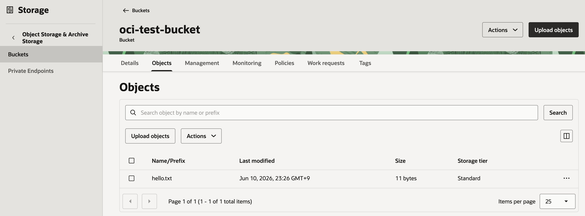
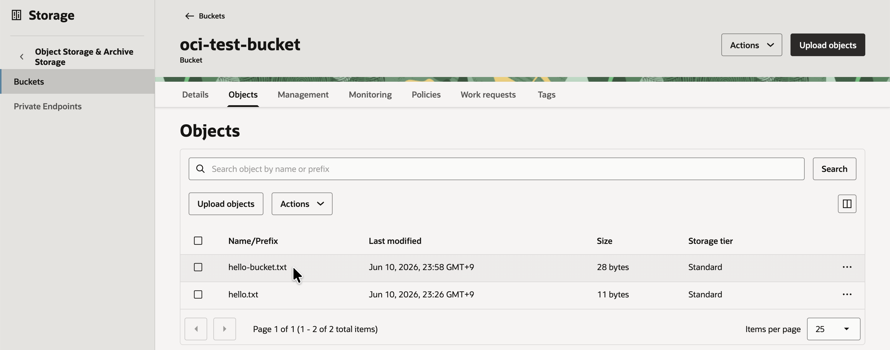

OKE 상의 컨테이너에서 OCIFS 유틸리티로 Object Storage 연결하기
오라클 블로그에서는 OKE 상의 Pod에서 Object Storage에 있는 파일에 접근하는 방법으로 아래 2가지로 설명하고 있습니다. OKE에서 OCI Object Storage Bucket를 위한 CSI Driver를 아직 제공하지 않습니다. 그렇지만, OCI Object Storage Bucket가 S3 API에 호환되므로 Mountpoint for Amazon S3 CSI Driver를 사용할 수 있습니다. 또는 오라클 리눅스에서 제공하는 OCIFS 유틸리티를 활용하여, OCIFS 설치된 컨테이너 이미지를 initContainer로 사용하여, 파일 패스에 마운트하는 방법입니다. 여기서는 2번째 방법인 OCIFS 유틸리티를 사용하는 방법을 테스트 해보고자 합니다.
-
Using OCI Object Storage buckets as a Persistent Volume Claim (PVC) in OCI Kubernetes Engine (OKE)
-
Using OCIFS utility with OCI Kubernetes Engine (OKE) and Object Storage
OCIFS 유틸리티를 사용하면, OCI Object Storage 버킷을 POSIX 스타일의 파일시스템처럼 마운트하여, 오브젝트들을 파일로 접근할 수 있게 해줍니다. OCIFS는 인증과 유효성 검사를 처리한 뒤 마운트된 경로를 제공하므로, 애플리케이션은 별도의 코드 수정 없이 일반 파일로 읽고 쓸 수 있습니다.
이점을 이용해 OCIFS 설치된 컨테이너 이미지를 initContainer로 사용하여, 파일 패스에 마운트합니다. 그리고는 같은 Pod내 메인 애플리케이션 컨테이너에서 마운트된 파일 볼륨을 사용하는 방법입니다.
OCIFS 컨테이너 이미지 준비
Installing the OCIFS Utility 문서를 참조하여, 설치할 수 있습니다. ocifs 패키지가 있는 oci_included 리포지토리를 활성화해야 합니다. 그래서, 여기서는 OCI 춘천리전에 Oracle Linux 9 VM을 생성하여, 아래와 같이 이미지를 생성하였습니다.
-
oci-included-ol9.repo파일 생성합니다.- 컨테이너 베이스 이미지로 oraclelinux 중 slim 이미지를 사용하는 경우, yum 변수가 동작하지 않는 것 같아, 블로그와 달리
baseurl에 주소 전체를 직접 명시하였습니다.
[ol9_oci_included] name=Oracle Linux $releasever OCI Included Packages ($basearch) baseurl=https://yum.ap-chuncheon-1.oci.oraclecloud.com/repo/OracleLinux/OL9/oci/included/$basearch/ gpgkey=file:///etc/pki/rpm-gpg/RPM-GPG-KEY-oracle gpgcheck=1 enabled=1 - 컨테이너 베이스 이미지로 oraclelinux 중 slim 이미지를 사용하는 경우, yum 변수가 동작하지 않는 것 같아, 블로그와 달리
-
Dockerfile 파일을 작성합니다.
FROM container-registry.oracle.com/os/oraclelinux:9-slim COPY oci-included-ol9.repo /etc/yum.repos.d/ RUN microdnf install ocifs && \ microdnf clean all ENTRYPOINT ["/bin/ocifs"] -
이미지를 빌드하고, 사용할 레지스트리에 등록하여 사용합니다. 필요하면 미리 등록해둔 다음 이미지를 사용합니다.
ghcr.io/thekoguryo/ocifs:ol9-slim
Pod에서 OCI Object Storage에 접근하기 위한 권한 설정
-
OKE Worker Nodes를 위한 Dynamic Group을 만듭니다.
-
이름:
oke-worker-nodes-dynamic-group -
규칙
All {instance.compartment.id = '<REPLACE_WITH_YOUR_COMPARTMENT_OCID>'}
-
-
Object Storage에 읽기/쓰기 권한을 부여하기 위한 IAM Policy를 만듭니다.
-
이름:
oke-workloads-object-storage-access-policy -
규칙
Allow dynamic-group <REPLACE_WITH_YOUR_IAM_DOMAIN>/oke-worker-nodes-dynamic-group to use objects in compartment <REPLACE_WITH_YOUR_COMPARTMENT_NAME>
-
OCI Object Storage Bucket 준비
-
OKE 클러스터가 있는 리전내에 Bucket을 생성하고, 테스트할 파일을 업로드합니다.

테스트
-
OKE 클러스터에 배포할 Deployment yaml 파일을 작성합니다. app.yaml 로 생성합니다.
- initContainers에서 image, args, volumeMounts에서 사용할 OCIFS 컨테이너 이미지 주소, 마운트할 Bucket 이름과 마운트 경로 등을 원하는 값으로 지정합니다.
apiVersion: apps/v1 kind: Deployment metadata: name: os-bucket-access labels: app: os-bucket-access spec: replicas: 1 selector: matchLabels: app: os-bucket-access template: metadata: labels: app: os-bucket-access spec: containers: - name: main-app securityContext: privileged: true image: 'oraclelinux:9-slim' command: ['sh', '-c', 'sleep infinity'] volumeMounts: - name: oci-test-bucket-vol mountPath: /mnt/bucket mountPropagation: Bidirectional initContainers: - name: ocifs image: 'ghcr.io/thekoguryo/ocifs:ol9-slim' restartPolicy: Always args: ['-f', '--auth=instance_principal', 'oci-test-bucket', '/mnt/bucket'] securityContext: privileged: true volumeMounts: - name: oci-test-bucket-vol mountPath: /mnt/bucket mountPropagation: Bidirectional volumes: - name: oci-test-bucket-vol emptyDir: {} -
배포가 잘 실행되는 지 확인합니다.
$ kubectl apply -f app.yaml deployment.apps/os-bucket-access created $ kubectl get pod NAME READY STATUS RESTARTS AGE os-bucket-access-74fd98b476-8fq55 2/2 Running 0 9s -
Pod의 메인 컨테이너에 접속해서 마운트된 결과를 확인합니다.
$ kubectl exec -it os-bucket-access-74fd98b476-8fq55 -c main-app -- bash bash-5.1# ls -la /mnt/bucket/ total 0 drwxr-xr-x. 2 root root 23 Jun 10 14:49 . drwxr-xr-x. 1 root root 20 Jun 10 14:49 .. -rw-r--r--. 1 root root 11 Jun 10 14:49 hello.txt bash-5.1# cat /mnt/bucket/hello.txt Hello, OKE -
마운트된 경로에 새 파일을 생성해 봅니다.
bash-5.1# echo "Hello, Bucket. I'm from Pod" > /mnt/bucket/hello-bucket.txt bash-5.1# ls -la /mnt/bucket/ total 8 drwxr-xr-x. 2 root root 47 Jun 10 14:58 . drwxr-xr-x. 1 root root 20 Jun 10 14:49 .. -rw-r--r--. 1 root root 28 Jun 10 14:58 hello-bucket.txt -rw-r--r--. 1 root root 11 Jun 10 14:52 hello.txt -
생성한 파일이 Object Storage Bucket에 업로드 되었는지 확인합니다.

-
이처럼 OCIFS 설치된 컨테이너 이미지를 initContainer로 사용하여, 파일 패스에 마운트해서, 마운트된 Bucket내 오브젝트를 파일로 읽고 쓸 수 있음을 확인하였습니다.
이 글은 개인으로서, 개인의 시간을 할애하여 작성된 글입니다. 글의 내용에 오류가 있을 수 있으며, 글 속의 의견은 개인적인 의견입니다.